아이콘과 상품 사진, 시스템으로 보기
출발점은 형광 녹색 버튼, 빽빽한 딸기 사진, 굵은 구분선이 섞인 쇼핑몰 상품 페이지예요. 화자는 이 화면에서 큰 실수만 15개를 찾고, 하나씩 고쳐 나가요.
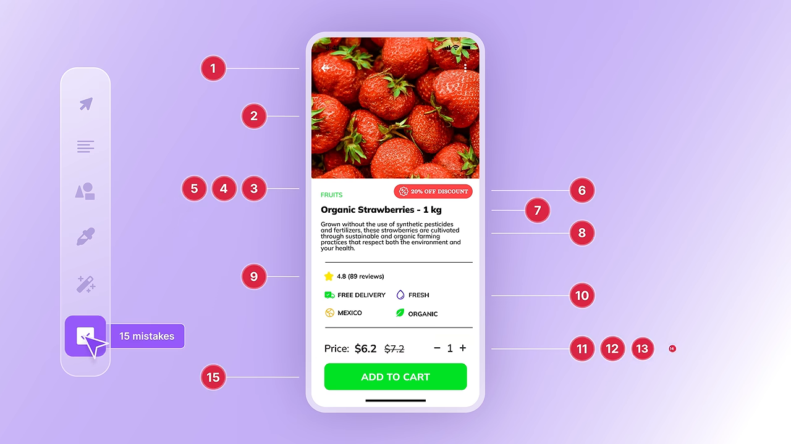
실수 1 — 사진에 묻히는 아이콘
뒤로가기와 더보기 아이콘이 상품 사진 위에 그대로 얹혀 있어요. 지금은 딸기 사진이 어두워서 보일 뿐이에요. 밝은 파인애플 사진으로 바꾸면 아이콘이 거의 사라져요.
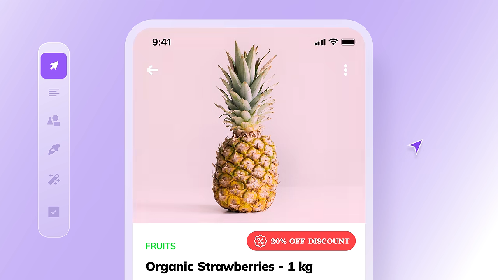
상품 페이지에는 어두운 사진, 밝은 사진, 복잡한 사진이 다 들어와요. 그래서 아이콘 뒤에 은은한 배경 원을 깔고, 대비를 충분히 주고, 얇은 테두리를 더해요. 이제 어떤 사진이 와도 아이콘이 보여요.
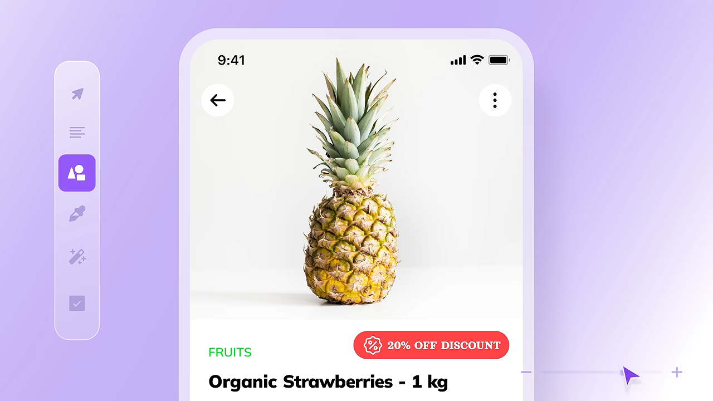
화자는 이걸 '화면 하나를 디자인하는 것'과 '실제 제품 시스템을 디자인하는 것'의 차이라고 설명해요.
실수 2 — 어떤 상품 사진을 고를까
상품 사진은 감정을 만들고 신뢰를 쌓고, 화면에서 가장 큰 자리를 차지해요. 화자는 후보 여섯 장을 놓고 하나를 고르게 해요. 정답은 F인데, 깔끔해 보여서만은 아니에요.
| 후보 | 사진 | 왜 아쉬운가요 |
|---|---|---|
| A | 딸기가 화면을 꽉 채움 | 너무 복잡해서 포컬 포인트가 없어요 |
| B | 두 손에 담긴 딸기 | 시선이 딸기가 아니라 손에 가요. 상품 사진보다 라이프스타일 사진에 가까워요 |
| C | 딸기 한 알 | 무게 단위로 파는데 한 알만 보여서 머릿속 그림이 어긋나요 |
| D | 분홍 배경의 딸기 | 배경이 인공적이에요. 유기농 신선식품은 자연스러워 보여야 해요 |
| E | 짚 바구니 속 딸기 클로즈업 | 사진만 보면 훌륭해요. 그런데 다른 상품과 나란히 놓이면 어수선해져요 |
| F | 깨끗한 배경 위 바구니 딸기 | 정답이에요. 자연스러움은 살리고 상품이 주인공이 돼요 |
E와 F의 차이가 이 구간의 핵심이에요. 상품 사진은 혼자 쓰이지 않고 상품 목록 그리드에 다른 상품들과 함께 놓여요. 상품마다 배경·조명·소품·색이 다르면 카탈로그 전체가 지저분해 보여요.
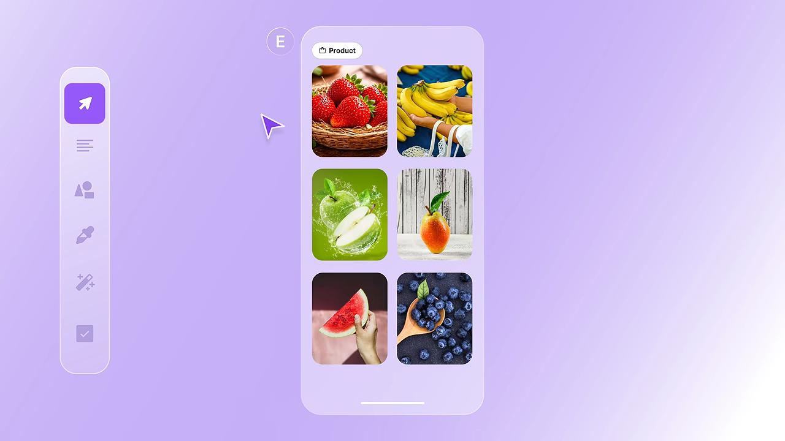
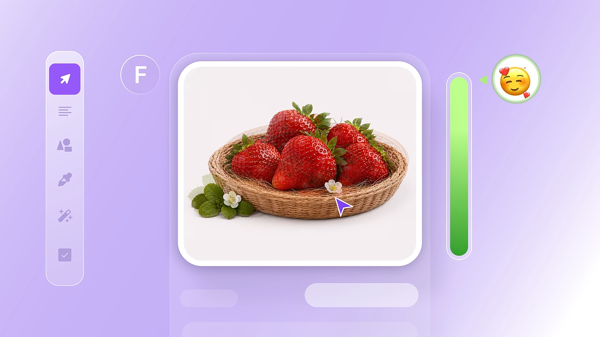
좋은 상품 사진은 혼자 예쁜 게 아니라 쇼핑 경험 전체 안에서 통해야 해요.
정렬·색·글꼴, 글자 다듬기
이 구간은 화면의 기본기를 한꺼번에 다듬어요. 실수 3부터 8까지 무엇을 어떻게 바꿨는지 먼저 표로 보고, 하나씩 짚어 볼게요.
| 실수 | 문제 | 고친 방법 |
|---|---|---|
| 3. 정렬 | 요소가 조금씩 왼쪽·오른쪽으로 어긋나고 간격이 들쭉날쭉해요 | 여백 기준을 하나로 정하고 그리드에 맞춰요 |
| 4. 색 | 너무 밝고 채도가 높아 엉뚱한 곳을 강조해요 | 부드럽고 자연스러운 팔레트로 바꿔요 |
| 5. 글꼴 | 글꼴 스타일이 너무 많아요 | Lato 하나로 통일해요 |
| 6. 라벨 | 'FRUITS'가 답답하고, 할인 배지에 말과 아이콘이 넘쳐요 | 자간을 벌리고 배지를 '20% off'로 줄여요 |
| 7. 상품명 | 굵기만 하고 크기·굵기의 위계가 어긋나요 | 크기와 굵기를 다시 잡아요 |
| 8. 설명 문단 | 줄 사이가 붙어 답답해요 | 줄 간격을 넓히고 본문 대비를 살짝 낮춰요 |
실수 3 — 정렬
전문적인 UI에서는 텍스트·아이콘·가격·버튼·섹션이 하나의 레이아웃 그리드를 따라요. 지금은 어떤 요소는 조금 왼쪽, 어떤 요소는 조금 오른쪽에 있어요. 사용자는 이걸 의식하지 못해도 화면이 덜 차분하고 덜 믿음직하다고 느껴요.
예를 들어 내용이 왼쪽에서 24px 떨어져 시작하면, 화면 전체가 같은 기준을 따르게 해요. 모든 요소가 같은 그리드에 붙으면 화면이 금세 균형 잡히고 의도한 것처럼 보여요.
실수 4 — 색
색이 너무 밝고 채도가 높으면 문제가 두 가지 생겨요. 화면이 읽기 어려워지고, 여러 요소가 동시에 시선을 끌어서 시각적 위계가 약해져요. 신선한 유기농 식품 페이지라면 색은 상품을 받쳐 줘야지 덮으면 안 돼요.
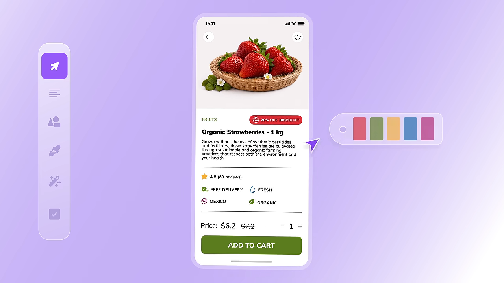
실수 5 — 글꼴
원래 화면은 글꼴 스타일이 너무 많고 일관성이 없어요. 상품 페이지에는 글꼴이 여러 개 필요하지 않아요. 대부분은 튼튼한 글꼴 가족 하나면 충분하고, 위계는 크기·굵기·색·줄 간격으로 만들면 돼요. 영상은 실제 앱들이 글꼴 하나로 화면을 꾸린 예를 보여 줘요.
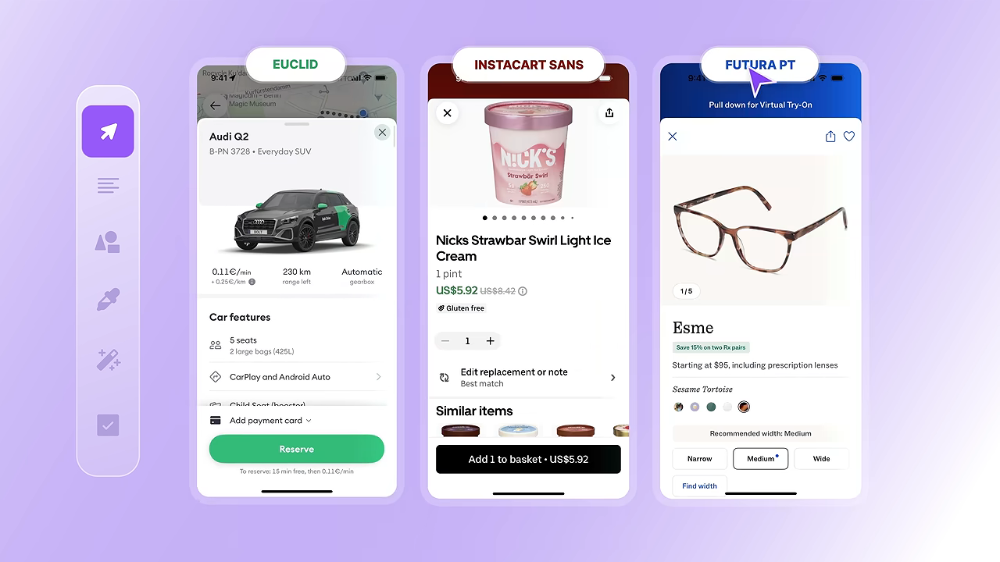
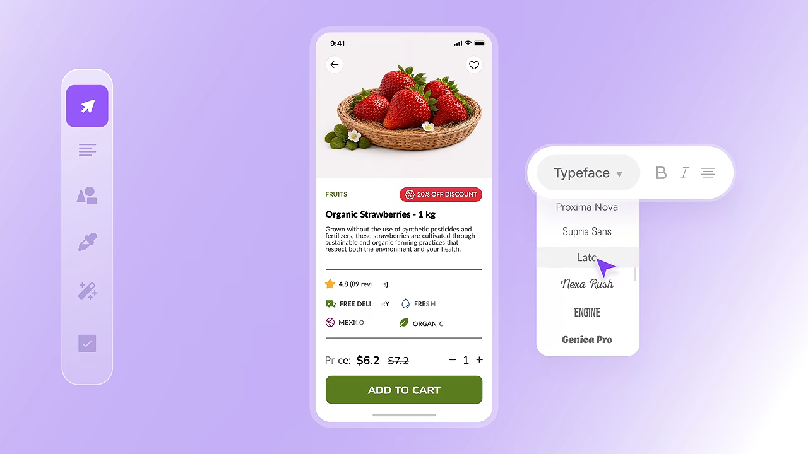
실수 6 — 라벨과 할인 배지
작은 대문자 라벨 'FRUITS'는 글자가 붙어 있어서 답답해요. 이런 라벨은 자간을 조금 벌리면 숨통이 트여요. 더 큰 문제는 할인 배지예요. '20% OFF DISCOUNT'라는 말에 아이콘까지 붙어 있어요. 배지는 한눈에 읽혀야 하니 '20% off'면 할인을 알리기에 충분하고, 상품에서 시선을 빼앗지도 않아요.
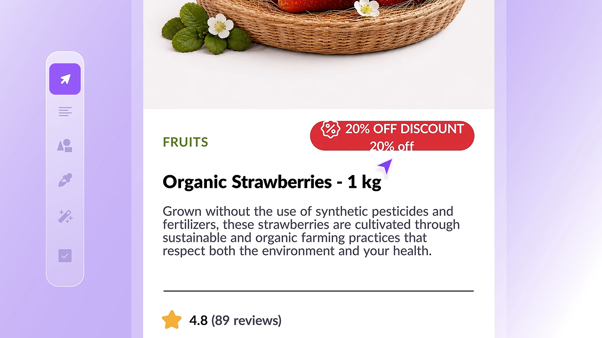
실수 7·8 — 상품명과 설명 문단
상품명은 '무엇을 사는지' 알려 주는 정보라 또렷하고 훑기 쉬워야 해요. 원래 상품명은 굵기만 하고 크기와 굵기가 알맞은 위계를 만들지 못했어요. 소리치지 않으면서 눈에 띄도록 크기와 굵기를 다시 맞춰요.
설명 문단은 줄 사이가 붙어서 빽빽해 보여요. 문단은 주목을 다투는 대신 상품을 편하게 이해하도록 도와야 해요. 그래서 줄 간격을 넓히고 본문 색 대비를 살짝 낮춰요.
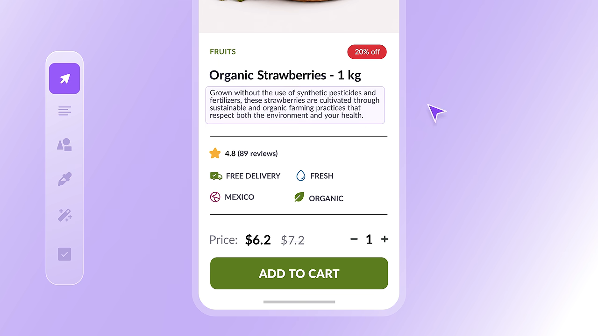
Headlines attract attention, paragraphs support understanding.
제목은 시선을 끌고, 문단은 이해를 도와요.
— 영상 06:43
별점 위치와 화면 정돈
실수 9 — 별점은 상품명 바로 옆에
여기서부터는 UX 쪽 판단이 더 깊어져요. 별점이 상품명에서 너무 멀리 떨어져 있었어요. 리뷰는 전자상거래에서 가장 강한 신뢰 신호 가운데 하나라, 상품명을 볼 때 평가도 같이 보여야 해요. 사용자는 '이게 뭐지?'와 '믿어도 되나?'를 거의 동시에 묻거든요.
그래서 별점을 상품명 바로 아래로 옮겨요. 이제 사용자는 무엇인지, 평가가 어떤지, 다른 사람들이 믿는지를 한 번에 알 수 있어요.
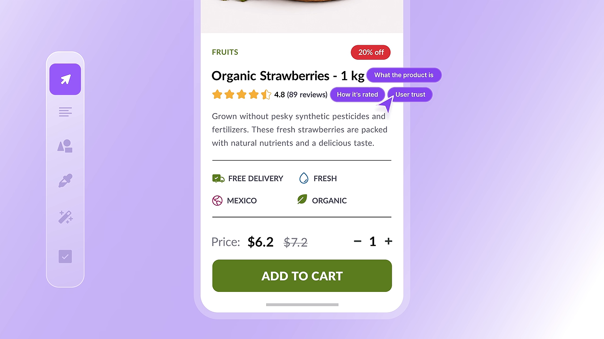
화자는 좋은 UI가 요소를 늘어놓는 일이 아니라, 정보를 사용자가 가장 필요한 자리에 두는 일이라고 정리해요.
실수 10 — 특징 아이콘
무료배송·신선·원산지·유기농을 알리는 아이콘 묶음은 정보 자체는 쓸모 있어요. 문제는 색이 너무 많고, 어떤 아이콘은 꽉 차 있고 어떤 건 선으로만 그려져 무게가 제각각이라는 점이에요. 아이콘은 같은 시각 규칙을 따라야 해요.
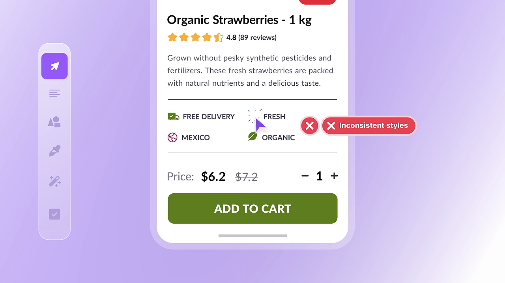
색을 줄이고 아이콘 스타일을 통일하고 간격을 좁혀요. 혜택은 그대로 전하면서 화면을 덜 차지하게 돼요. 색을 여러 개 써도 되지만, 의도를 갖고 써야 해요.
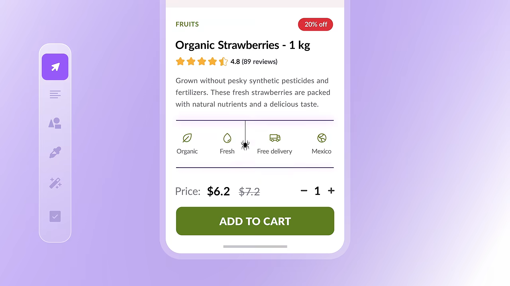
실수 11·12 — 구분선과 여백
구분선은 섹션을 나누려고 있는 건데, 너무 진하고 두꺼우면 페이지가 하나의 흐름이 아니라 딱딱한 블록으로 쪼개져 보여요. 연하게 바꾸면 은은하고 깔끔해져요. 작은 디테일이지만 이런 것이 화면을 고급스럽게 만든다고 해요.
섹션 사이 여백도 어떤 곳은 너무 넓어요. 여백은 중요하지만 엉뚱한 곳에 많으면 레이아웃이 끊겨 보여요. 살짝 좁히면 흐름이 이어지고 훑기 쉬워져요. 좋은 여백은 많이 비우는 게 아니라 요소 사이 관계를 맞게 잡는 일이에요.
실수 13 — 필요 없는 'Price' 라벨
가격 숫자 앞에 'Price'라는 글자가 붙어 있어요. 통화 기호가 붙은 숫자를 보면 사용자는 이미 가격이라는 걸 알아요. 접근성을 챙기겠다고 라벨을 단다면, 옆의 수량 선택에도 라벨을 달아야 일관돼요. 그러니 라벨을 아예 빼고 가격이 스스로 말하게 하는 편이 깔끔해요.
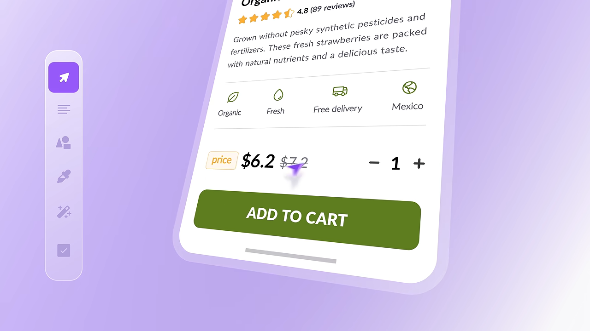
구매 영역 다시 짜기
실수 14 — 상품명 속 '1 kg'과 가격 위치
상품명이 'Organic Strawberries - 1 kg'이에요. 그런데 사용자는 수량 선택기로 양을 바꿀 수 있어요. 그러면 상품이 1kg에 묶여 있지 않으니 상품명이 오해를 줘요. 상품명은 상품만 설명하고, 양은 구매 영역에서 따로 다뤄요.
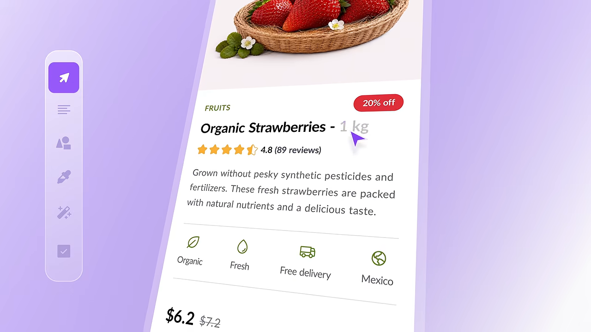
가격도 화면 아래쪽에 너무 늦게 나와요. 가격을 어디에 둘지는 상품, 대상 사용자, 구매 맥락에 따라 달라요. 이 경우엔 가격을 더 일찍 보여 주는 게 맞아서 별점 바로 아래로 올려요. 이제 사용자는 상품을 보자마자 무엇인지, 얼마나 좋은지, 얼마인지를 알아요.
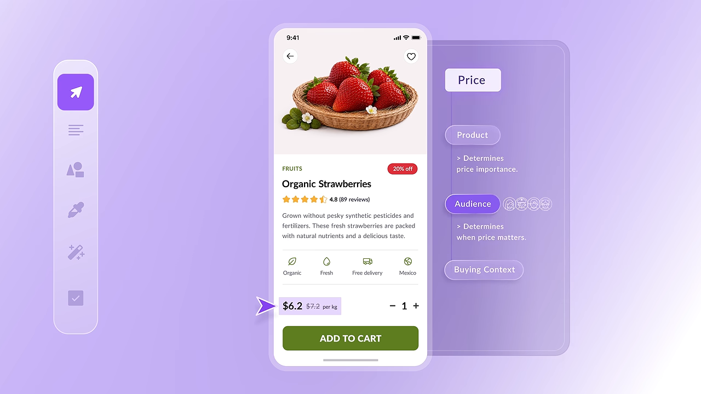
실수 15 — 장바구니 버튼
장바구니 버튼은 화면에서 가장 중요한 동작이어야 해요. 그런데 글자가 전부 대문자이고 크기도 커서 소리치는 느낌이에요. 그래서 차분하고 정돈된 모양으로 다듬어요.
문제가 하나 더 있어요. 수량 선택기가 버튼에서 멀리 떨어져 있어요. 사람은 얼마나 살지 고른 다음 장바구니에 담으니, 둘을 나란히 붙여요. 선택기 안에는 'kg' 단위를 바로 넣어요.
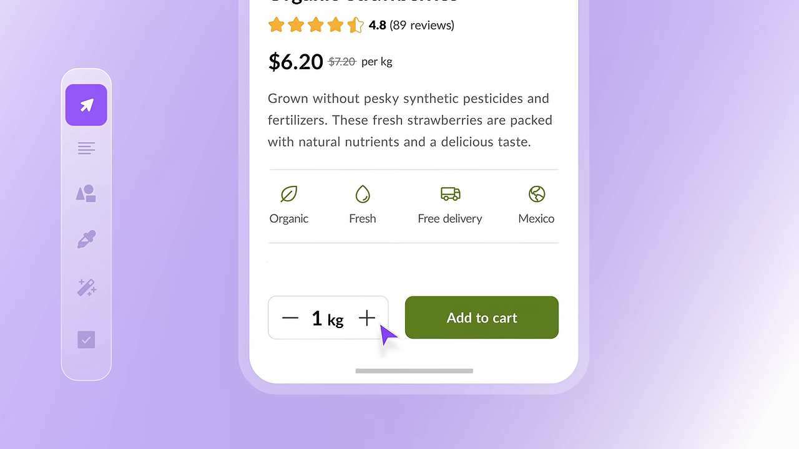
마지막으로 버튼 안에 총액을 넣어요. 사용자는 누르기 전에 얼마를 낼지 알 수 있고, 그만큼 망설임이 줄어요.
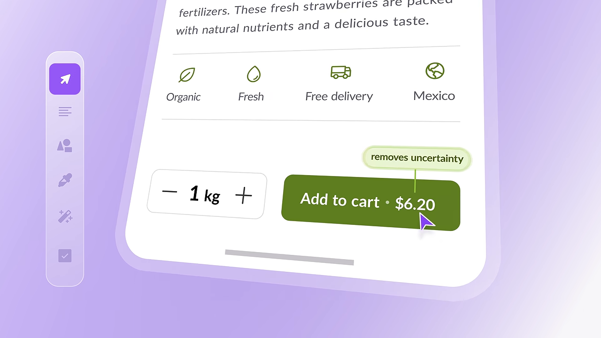
실수 고치기에서 한 걸음 더
여기서 15개 실수는 다 고쳤어요. 화자는 많은 리디자인이 여기서 멈춘다고 말해요. 좋은 제품 디자인은 망가진 걸 고치는 데서 끝나지 않고, 경험 전체를 더 쉽게 만들어야 한다는 거예요. 그래서 개선 세 가지를 더해요.
| 개선 | 무엇을 하나요 | 사용자에게 뭐가 좋아지나요 |
|---|---|---|
| 1. 스크롤 카드 | 상세 정보를 둥근 카드로 만들어 사진 위로 올라오게 하고, 상품명을 상단에 스티키로 고정해요 | 깊이 스크롤해도 무슨 상품을 보는지 잊지 않아요 |
| 2. 하단 고정 구매 바 | 수량 선택기와 장바구니 버튼을 화면 아래에 늘 보이게 해요 | 사겠다고 마음먹은 순간 바로 누를 수 있어요 |
| 3. 미리 정한 수량 | 자주 사는 무게를 버튼으로 둬요 | 선택기를 여러 번 누르지 않고 한 번에 골라요 |
개선 1 — 스크롤 카드와 고정 상품명
상세 정보 영역을 둥근 모서리와 옅은 그림자를 가진 카드로 바꿔요. 사진과 상세 정보가 각자 자리를 갖고, 스크롤하면 카드가 사진 위로 미끄러져 올라와요. 처음에는 상품이 계속 보이다가, 사진이 더는 주인공이 아닐 때 상품명이 상단 내비게이션으로 옮겨가 고정돼요. 그래서 아래로 한참 내려가도 맥락을 잃지 않아요.
개선 2 — 하단 고정 구매 바
수량 선택기와 장바구니 버튼이 스크롤해도 화면 아래에 계속 남아 있어요. 사람은 페이지 맨 위에서 바로 사기보다, 설명을 더 읽고 '함께 많이 산 상품'을 둘러보다가 마음을 정하는 일이 많아요. 그 순간 바로 행동할 수 있게 하는 거예요.
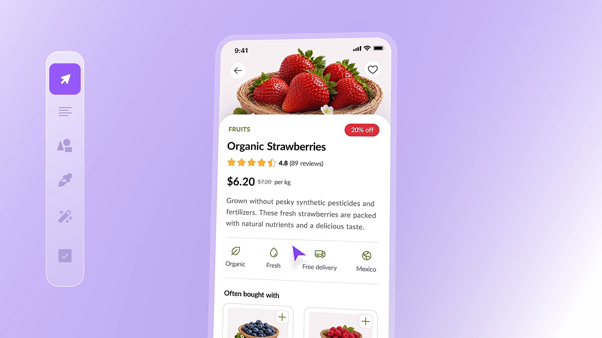
화자는 이 지점에서 화면을 더 예쁘게 만드는 게 아니라 구매 경험을 더 쉽게 만들고 있다고 강조해요.
개선 3 — 미리 정한 수량
수량 선택기를 여러 번 누르게 하는 대신, 자주 사는 무게를 한 번에 고를 수 있게 해요. 화자는 말로 500 g, 1 kg, 2 kg을 예로 들고, 화면에는 0.5 kg(Snack), 1 kg(Regular), 2 kg(Family), 3 kg(Party) 네 칸과 각 가격이 나와요. 선택지는 실제 구매 데이터를 보고 정해요. 손님 대부분이 1kg이나 2kg을 산다면 그걸 고르기 쉽게 두는 거예요. 원하는 양을 직접 맞추는 선택기는 그대로 남겨요.
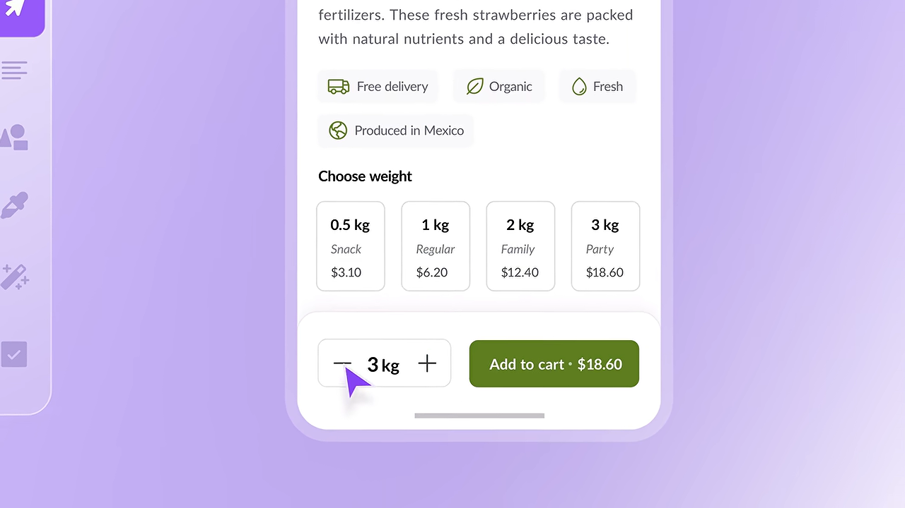
화자는 이걸 작은 UX 개선이지만 실제 매출에 영향을 주는 개선이라고 불러요.
원본과 새 버전
마지막으로 처음 화면과 새 화면을 나란히 놓아요. 사진은 통일된 느낌을 주고, 레이아웃은 예측 가능하고, 정보는 훑기 쉬워졌어요. 다른 상품이 들어와도 같은 규칙으로 무너지지 않는 디자인이 됐어요.
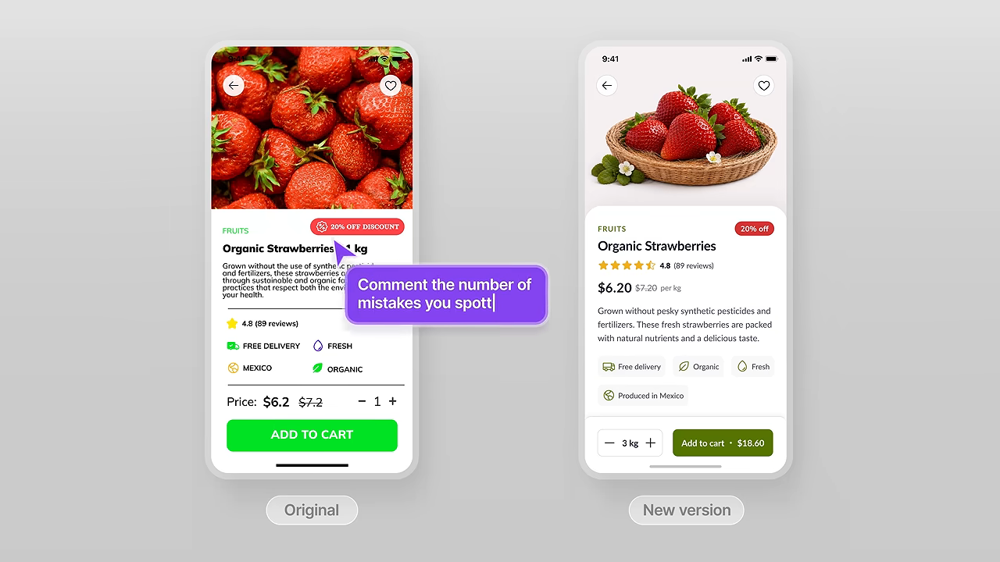